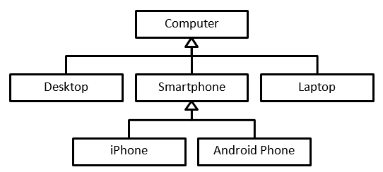

3. Inheritance & Abstract Methods |
| In this chapter you will learn: |
|---|
|
When creating classes, you may begin to realise that some classes have certain similarities that lead to lots of code being duplicated across classes. For example, in Task 2, the Manager, Receptionist, Cleaner and Customer classes all have the same name attribute:
This is not too much of an issue when there are very few similarities, but as soon as classes begin to have multiple identical attributes, or even identical methods, a lot of time can be spent copying existing code from one class to another. Object-oriented programming solves this dilemma through inheritance.

You can find examples of inheritance everywhere. The above image shows the inheritance relationships between different types of computer. Desktops, smartphones and laptops are all specific types of computer, and iPhones and Android phones are both specific types of smartphone. Inheritance only works one way; for example, if you come up with a definition for a smartphone, then that definition will also work for an Android phone, but it won’t work for every computer.
Simply put, inheritance refers to when one class copies the characteristics of another class, but can then add to or alter that class’s methods or attributes. This means that a generic class can be created which defines all of the basic characteristics of a class, as shown below:
Note the use of the protected keyword on the featherColour attribute. If an attribute or method is declared as protected, it can only be accessed from within that class or from a class that inherits from that class. This Bird class defines the attributes and abilities that every bird has. However, we may want to define a more specific class that builds on this one:
Note that this class has no defined constructor. It uses the same constructor as its parent class and so doesn't need to redefine it.
A class that inherits from another class is known as a child class, and the class that it inherits from is known as its parent class. In this case, the class SwimmingBird is a child of the parent class Bird, and, as a result, the SwimmingBird class keeps all of the characteristics defined in the Bird class, but has an extra swim method. In the following code:
bird1.fly() and bird2.fly() will both print ‘This bird is flying’ because although the SwimmingBird class does not define the fly method, it can still use it because it is defined in its parent class. While bird2.swim() will print ‘This bird is swimming’, bird1.swim() will cause an error, as the parent class Bird does not have access to the methods defined in the child class SwimmingBird.
Inheritance is not just used to add to a parent class, but can also be used to change how methods defined in the parent class act in the child class:
A class can inherit from a class that inherits from yet another class
The Flamingo class inherits from the SwimmingBird class, but defines a new constructor. This means that when a Flamingo object is created, the inherited Bird constructor will be replaced by the new Flamingo constructor.
The Flamingo constructor uses what is known as a super method. Super methods are calls to methods in a class’s parent class. So, in the previous case, super.new() calls the new method of the SwimmingBird class (which in this case is just the new method from the Bird class).
A parent class can have multiple child classes that inherit it. So, along with the above classes, we can define:
Any number of child classes can expand on the same parent class in different ways.
While a class can have multiple child classes without causing any problems, if a class tries to inherit from more than one class (known as multiple inheritance) there can be issues regarding what characteristics that class should inherit. For example, if a class tried to inherit from multiple classes as follows:
It is not clear if the result of method() in class D should be ‘Do this’ or ‘Do that’. Some programming languages won’t allow a class to inherit multiple classes, while others try to solve this issue by defining a priority for each parent class depending on how the classes are arranged (but this can be confusing or unintuitive to work with).
One way to get around the issues with multiple inheritance is to use abstract classes. An abstract class is a class that declares methods without specifying how they work; these methods are known as abstract methods. For example, the following class would be an abstract class:
An abstract method only defines the method’s name and parameters (and the data types of the method and parameters in some programming languages) of the method. Any class that contains an abstract method is an abstract class, but an abstract class can contain non-abstract methods.
You cannot create an object from an abstract class, and any class that inherits from an abstract class must define all of its parent class' abstract methods using the specified parameters for each method. If the child class leaves any of the abstract methods undefined, then it will be an abstract class itself.
ConcreteClass defines the abstract method in AbstractClass, and as it has no undefined abstract methods remaining, ConcreteClass objects can be created.
Abstract methods are useful because they tell the programmer what functionality a class needs to implement without defining a generic method in the parent class that may not be useful. For example, if we had a parent class Dog, with child classes for different breeds of dog, there are some functions that each child class may need to implement, although they may all implement it differently.
A generic version of the whatBreed method could be defined in the Dog class, but every child that inherits from Dog would need to replace the method anyway, so declaring it as an abstract method in Dog is more suitable. Abstract methods should be used when all child classes require a certain method but with differing implementation.
Some languages refer to classes that only contain abstract methods as interfaces, and allow classes to ‘inherit’ multiple interfaces but only one actual class. This avoids the issues with multiple inheritance as interfaces do not have implementations that can cause conflicts with each other.
C# does not allow for multiple inheritance, so the following would not be a valid class declaration:
In C#, abstract methods cannot be given any functionality, and must be declared as statements with the abstract keyword:
method has been declared as an abstract method with return type void and no parameters. This means that any child classes will need to implement method in order to be instantiated.
To implement an abstract method, the 'override' keyword must be used as follows:
Note that the non-abstract method must have the same return type and take the same parameters as the abstract method that it is implementing.
If parent and child classes are declared as follows:
... the Child constructor will use : base() to run the constructor method of its parent class, and then increases the value of b by 1. When a Child object is created, it will not have an attribute a, as a is a private attribute and so not inherited, and it will have an attribute b with a value of 3.
| Q1 | Define the term inheritance. (1 mark) |
|---|---|
| Q2 | Draw a diagram to show inheritance relationships between at least three things. (2 marks) |
| Q3 | Use the pseudocode below to answer the questions that follow:Pseudocode
|
| Q4 | Describe what happens when a class calls a super method. (1 marks) |
| Q5 | Explain the issue caused by allowing multiple inheritance. (2 marks) |
| Q6 | Define the term abstract method, and explain when you might use an abstract method. (2 marks) |
|
This activity uses the following files: The Task 3 skeleton code contains classes for various animals, describing what attributes they have and what actions they can do. Recreate the Task 3 skeleton code so that it keeps the same functionality but adds three additional classes: Animal, Reptile and Mammal. The Animal class should include abstract methods. Classes should inherit from other classes as appropriate, and as much functionality as possible should be moved to the three new classes. The main method should not be altered. (17 marks) |